Project DescriptionDescripción del Proyecto
This project explores Microsoft's Azure AI Language service, focused on natural language analysis and processing through a console application built in Visual Studio with .NET 8.0.
Este proyecto tiene como objetivo explorar el uso del servicio Azure AI Language de Microsoft, enfocado en el análisis y procesamiento del lenguaje natural mediante una aplicación de consola desarrollada en Visual Studio con .NET 8.0.
Several features are implemented with the Azure.AI.TextAnalytics SDK, such as language detection, sentiment analysis, key phrase extraction, entity recognition and entity linking to external sources like Wikipedia.
Se implementan múltiples funcionalidades utilizando el SDK Azure.AI.TextAnalytics, tales como la detección de idioma, análisis de sentimientos, extracción de frases clave, reconocimiento de entidades y vinculación de entidades con fuentes externas como Wikipedia.
In addition, the Azure.Storage.Blobs SDK was used to read a PDF file hosted in Azure Blob Storage.
Además, se utilizó el SDK Azure.Storage.Blobs para hacer lectura de un archivo PDF alojado en Azure Blob Storage.
Project LinksEnlaces del Proyecto
☁️ Creating the Language Service resourceCreación del recurso Servicio de Lenguaje
We go to the Azure portal and create the resource: Language Service.
Debemos ir al portal de Azure y crear el recurso: Servicio de Lenguaje.
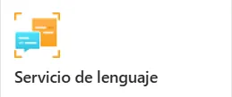
Once the resource is created, we review its details and save the connection credentials, which we will need later in the project.
Una vez creado el recurso, debemos revisar su información y guardar las credenciales de conexión, que necesitaremos más adelante en el proyecto.
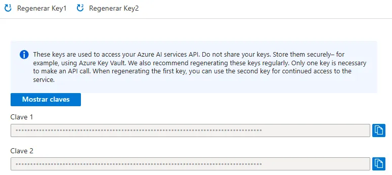
We go to the "Develop" option and choose "Classify Text", which takes us to the official Microsoft documentation with GitHub examples on how to use the SDK.
Vamos a la opción de "Desarrollar" y elegimos "Clasificar Texto", lo cual nos llevará a la documentación oficial de Microsoft con ejemplos de GitHub sobre cómo usar el SDK.
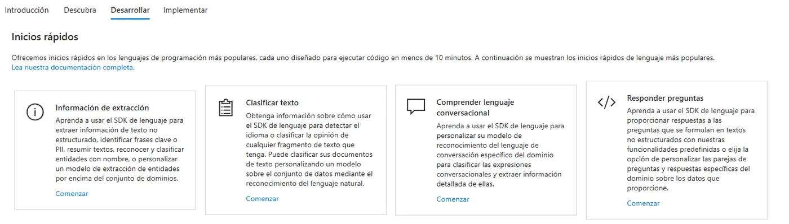
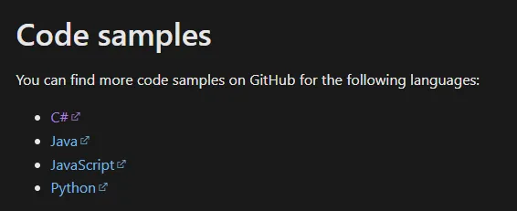
🤖 Installing the Azure AI Text Analytics SDKInstalación del SDK Azure AI Text Analytics
A .NET 8.0 console application was created. Then we installed the Azure.AI.TextAnalytics SDK from NuGet.
The option to include pre-release versions must be enabled. The Azure.Storage.Blobs package is also required to get
the PDF hosted in Blob Storage.
Se creó una aplicación de consola en .NET 8.0. Posteriormente, instalamos el SDK Azure.AI.TextAnalytics desde NuGet.
Es importante que la opción de incluir versiones preliminares (pre-release) esté activada. También es necesaria la instalación del paquete Azure.Storage.Blobs para obtener
el PDF alojado en Blob Storage.
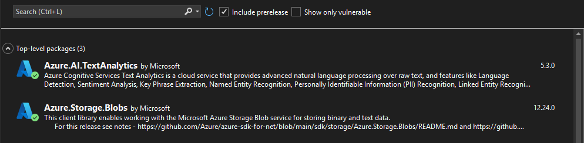
We use the credentials from the Language resource and a PDF hosted in Blob Storage.
Usamos las credenciales obtenidas del recurso de Lenguaje y un PDF alojado en Blob Storage.
We configure the client.
Configuramos el cliente.
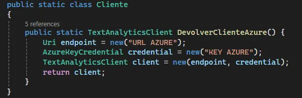
We get the PDF from Blob Storage.
Obtenemos el PDF desde Blob Storage.
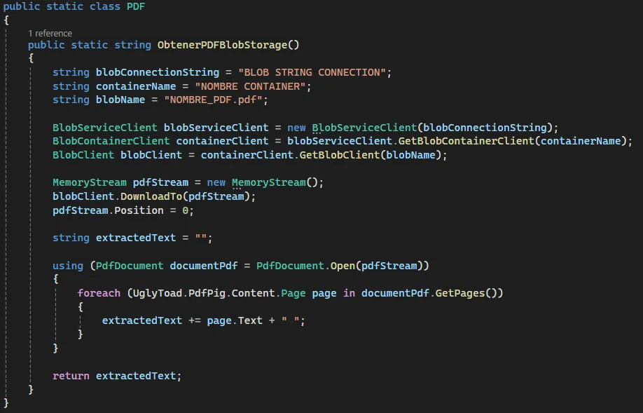
We call the methods created as examples.
Hacemos el llamado a los métodos creados como ejemplo.
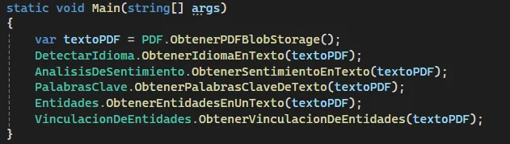
The sample PDF has 2 pages with the following content:
El PDF de ejemplo consta de 2 páginas y contiene el siguiente contenido:
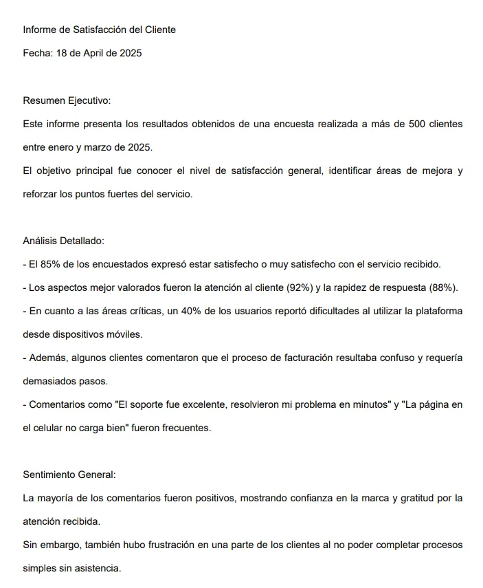
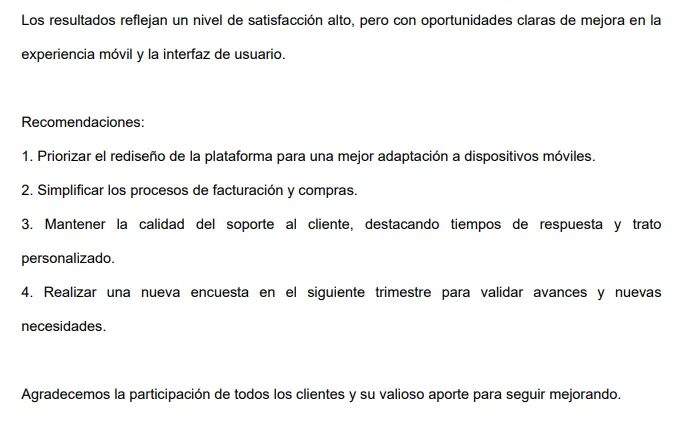
🧬 Detect languageDetectar idioma
The DetectLanguage service is used to analyze the text and identify its language.
Se utiliza el servicio DetectLanguage para analizar el texto e identificar el idioma.
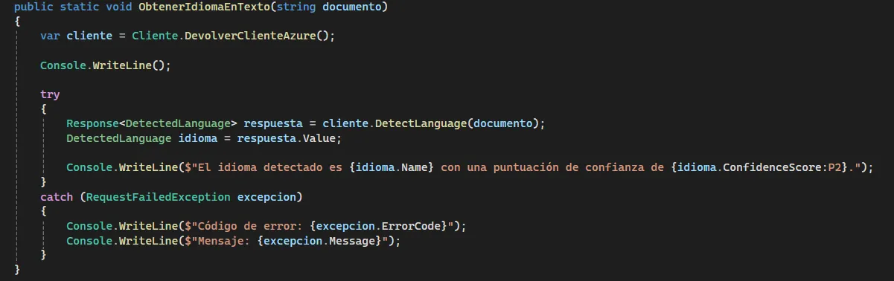
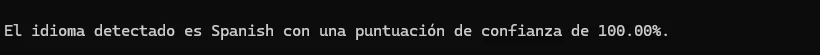
🧬 Sentiment analysisAnálisis de sentimiento
The AnalyzeSentiment service is used to measure the percentage of each sentiment present in the text.
Se utiliza el servicio AnalyzeSentiment para analizar el porcentaje de los sentimientos presentes en el texto.
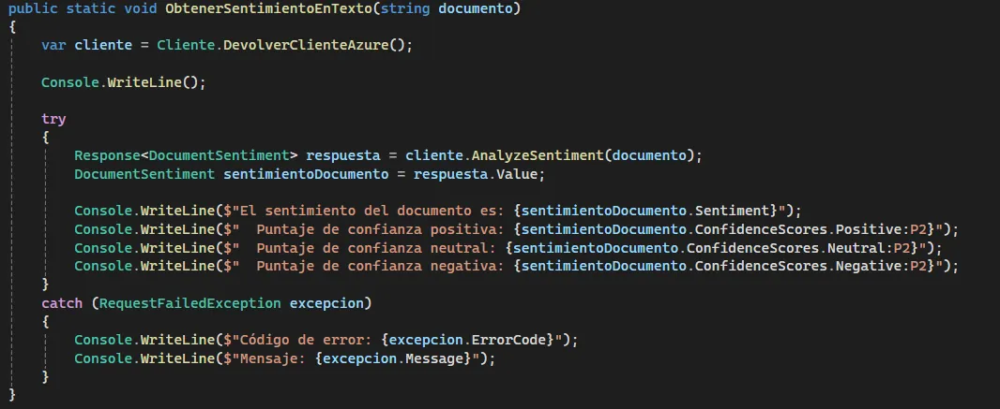
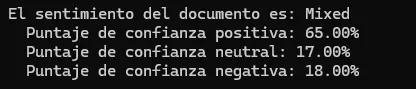
🧬 Extract key phrasesObtener palabras clave
The ExtractKeyPhrases service is used to analyze the text and extract its key phrases.
Se utiliza el servicio ExtractKeyPhrases para analizar el texto y extraer las palabras clave.
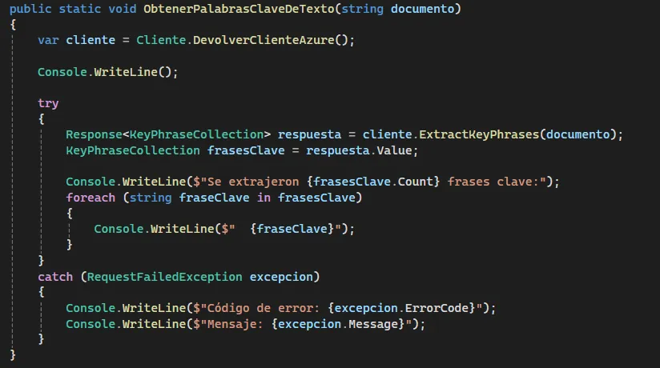
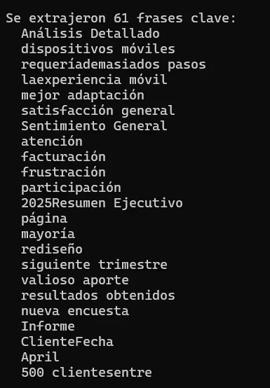
🧬 Recognize entitiesObtener entidades
The RecognizeEntities service is used to analyze the text and get the entities found.
Se utiliza el servicio RecognizeEntities para analizar el texto y obtener las entidades encontradas.
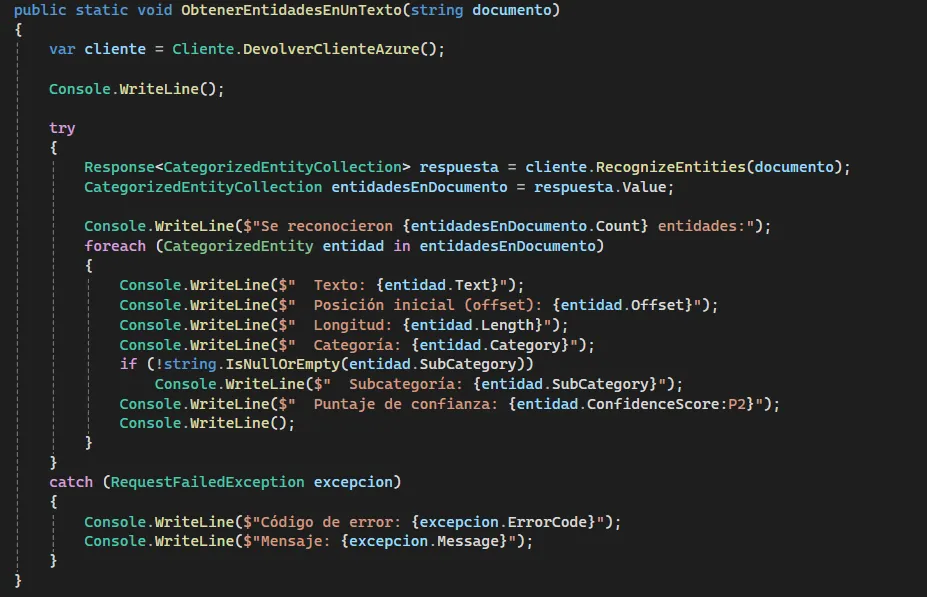
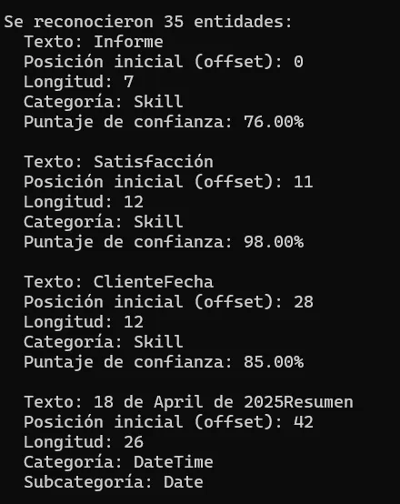
🧬 Entity linkingObtener vinculación entre entidades
The RecognizeLinkedEntities service is used to detect entities in the text (such as people, places, organizations, events, etc.) and link them to external sources like Wikipedia, providing more context and understanding of the analyzed content.
Se utiliza el servicio RecognizeLinkedEntities para detectar entidades en el texto (como personas, lugares, organizaciones, eventos, etc.) y vincularlas a fuentes externas como Wikipedia, proporcionando así más contexto y comprensión sobre el contenido analizado.
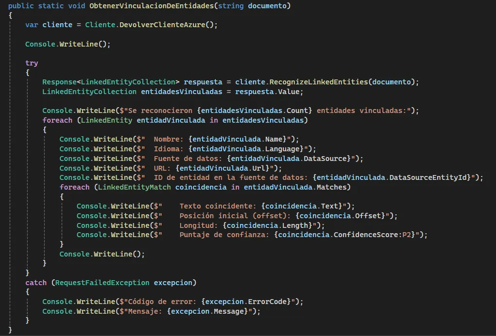
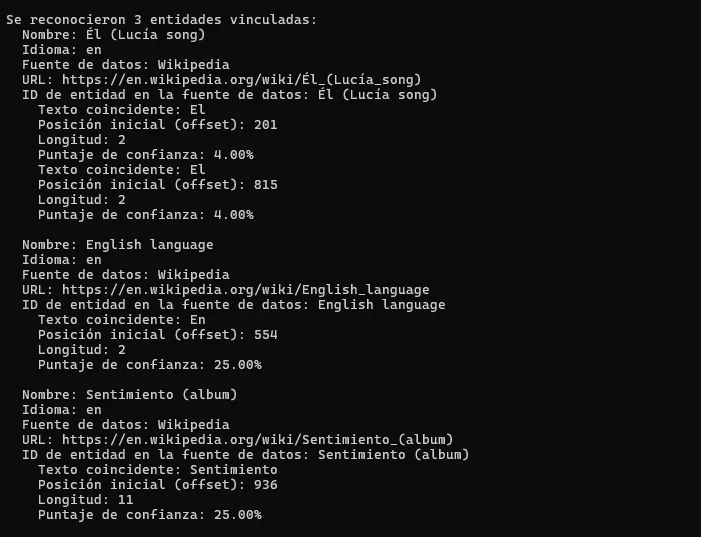